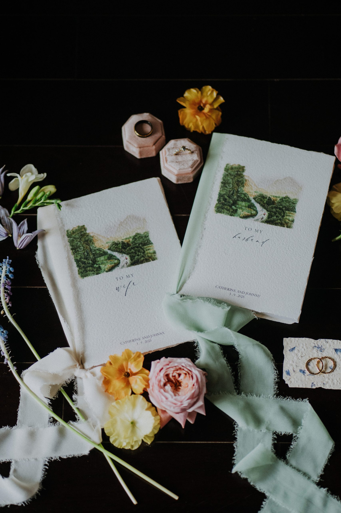

For celebrations held close to the city you call home.

Held with a clear hand.
A detailed wedding plan for Hanoi, Ho Chi Minh City and the surrounding areas — so you and your guests can relax into the moment.
A clear fit
For a wedding that needs one steady team.
Standard Wedding is for couples who want their ideas heard and the moving parts of the day held with care.
One connected planning journey, rather than a handover at the last moment.
The service ledger
Every essential, in its right place.
A wedding day feels effortless when decisions, people and timing have been held together well beforehand. The service is structured around four parts of that work.
Start with a clear frame.
- Budget management
- Overall concept consulting
Choose the setting well.
- Orientation and advice
- Venue search and coordination
Bring the right people together.
- Vendor selection and management
- Styling
Let the day move naturally.
- On-the-day coordination
- Vietnamese traditional ceremony

What it protects
The people in the day get to be in the day.
Planning is about celebrating the relationships that have defined you, while making new memories along the way. WIS stays on your side so you, your partner, families and guests can enjoy the wedding day without carrying its logistics.

If planning has already begun
Start with the part that still needs care.
You do not need to begin at zero. For couples who have started planning on their own and need professional advice for particular things, WIS can create a bespoke package around the help that is still needed.
Since2009
One of Vietnam’s early premium wedding planners.
StudiosHanoi & Ho Chi Minh City
A partner network grown through real celebrations.
Other ways of working
The right care takes a different form.
For a different scale, setting or starting point, explore the other active ways WIS can work with you.
Begin here
Tell us the date, place and part you need us to hold.
Bring us the outline of your celebration. We will begin by understanding what is already certain and what still needs care.
Begin the conversation